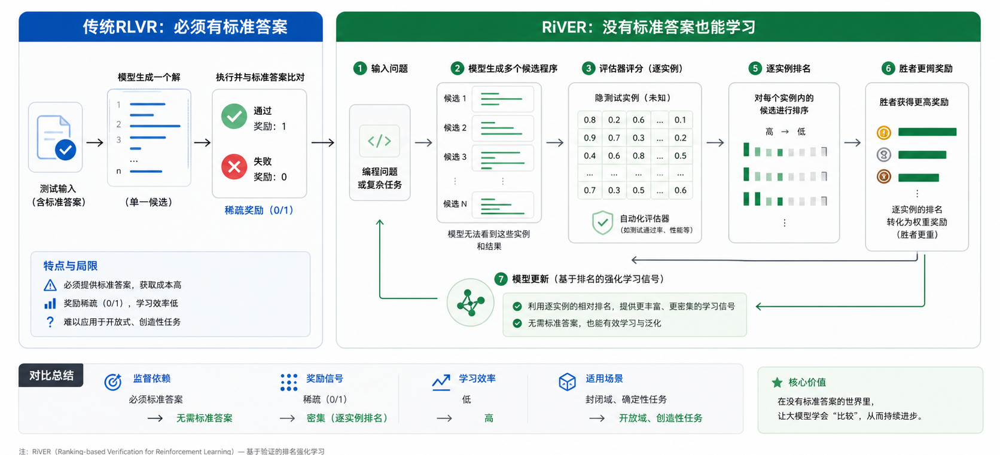

AI每日论文精选 · 2026-06-28
RiVER：没有标准答案，AI也能继续学习
这篇论文把强化学习从“做题对答案”，推进到“在真实环境里比较谁做得更好”。它可能是代码模型、优化型 Agent 和自动改进系统的重要训练范式。
1. 标题区
核心主题把“可验证奖励”从标准答案扩展到可执行环境：程序跑起来、被约束检查、按目标函数打分，再用相对排名训练模型。
会议 / 平台当前为 arXiv 预印本，未在论文页标注接收会议。报告中的结论以论文自报实验和公开基准说明为依据。
2. 为什么今天选它？
因为它回答了一个非常现实的问题：如果未来 AI 要解决的任务越来越像创业、调度、研究、供应链、代码优化，而不是考试选择题，那么我们还怎么训练它？
行业意义过去的 RLVR 很像“老师手里有答案”。RiVER 说：很多任务没有标准答案，但有裁判和计分牌，AI 仍然可以学习。
技术突破它不是直接拿原始分数喂给模型，而是先做同实例排名，再给胜者更重奖励，避免分数尺度和重复样本误导训练。
长期价值如果成立，优化问题、仿真器、工具环境、商业流程都可能变成训练数据来源，而不需要人工写出“唯一正确答案”。
克制判断：RiVER 还不是被行业大规模复现的经典论文。今天选它，不是因为它最热，而是因为它切中了“可验证强化学习如何继续扩展”的关键瓶颈。
3. 一句话讲透论文
RiVER 像让 AI 参加“没有标准答案的编程竞赛”：不问它是否写出唯一答案，只看它的方案跑起来后，是否比同场其他方案更好。
4. 核心贡献拆解
| 问题 | 旧方法 | RiVER 的做法 | 为什么更好 |
|---|---|---|---|
| 没有标准答案 | RLVR 通常依赖正确答案、单元测试或 gold output。 | 只需要一个能执行、能检查约束、能计算目标分数的环境。 | 让优化、规划、调度这类开放任务也能提供训练信号。 |
| 原始分数不可比 | 直接把任务分数当奖励，容易被大尺度实例支配。 | 在同一个隐藏实例内比较候选程序，转成排名。 | 像同一张试卷上排名，避免不同试卷分值尺度互相污染。 |
| 好方案太稀有 | 多个普通方案重复出现，可能比一个罕见强方案拿到更多梯度权重。 | Winner-heavy reward：胜者明显加权，非胜者仍保留有限反馈。 | 鼓励模型记住真正更好的策略，而不是被“人多势众”的普通策略带偏。 |
| 能否迁移 | 只在原任务涨分，不一定提升一般代码能力。 | 在 AHC 训练，再测 ALE-Bench、LiveCodeBench、USACO。 | 论文报告显示不只优化竞赛涨分，常规 pass/fail 代码题也有提升。 |
5. 工作原理：深入浅出
可以把 RiVER 想成一个没有标准答案的厨艺比赛。评委不知道“世界上最好吃的菜”是什么，但能判断：这盘能不能吃、是否符合规则、味道得分多少。同一批选手做同一道题，谁更好就更值得学习。

ChatGPT Image 2.0 生成图经裁剪后保留核心流程；报告下方另用可控 SVG 重构关键逻辑，避免依赖截图式读图。
重构图：RiVER 把开放式优化任务变成可比较、可执行、可训练的反馈回路。
三步理解
第一步：模型一次生成多个候选程序，而不是只交一个答案。
第二步：每个程序在同一组隐藏测试实例上运行。失败、超时、违反约束会被扣掉；有效程序按目标函数得分。
第三步：RiVER 不直接迷信原始分数，而是在每个实例内部排序，并给最强候选更大训练信号。
6. 关键术语解释
| 术语 | 专业解释 | 白话解释 |
|---|---|---|
| RLVR | Reinforcement Learning with Verifiable Rewards，用可验证反馈做强化学习。 | AI 做完题后，有一个自动裁判告诉它对不对或好不好。 |
| Ground-truth | 标准答案、参考程序或已知最优解。 | 老师手里的答案。 |
| Evaluator | 可执行评测器，负责运行程序、检查约束、计算目标值。 | 比赛裁判和计分器。 |
| Objective score | 优化任务的目标函数分数，可能是路径长度、成本、收益等。 | 不是“对/错”，而是“做得有多好”。 |
| GRPO | Group Relative Policy Optimization，一类用同组样本相对表现更新策略的方法。 | 让同一批候选互相比，表现好的方向被加强。 |
| Pass@1 | 模型第一次生成的答案通过测试的比例。 | 一次出手就做对的概率。 |
| AHC / ALE-Bench | AtCoder Heuristic Contest 与基于 AHC 的算法工程评测。 | 更像“写一个尽量好的方案”，不是背标准答案。 |
7. 实验结果解读
论文使用 12 个 AtCoder Heuristic Contest 任务训练，底座模型是 Qwen3-8B 与 GLM-Z1-9B-0414。评估分两类：一类是无标准答案的 ALE-Bench，另一类是传统 pass/fail 的 LiveCodeBench 与 USACO。
| 模型 | ALE-Bench Rating | ALE Rank % | LCB v5 Avg | LCB v6 Avg | USACO | 解读 |
|---|---|---|---|---|---|---|
| Qwen3-8B 基线 | 845 | 86.4 | 56.1 | 49.2 | 40.4 | 原始能力。 |
| Qwen3-8B + RiVER | 987 | 77.5 | 58.3 | 51.4 | 43.3 | 优化竞赛明显提升，传统代码题也提升。 |
| GLM-Z1-9B 基线 | 805 | 88.2 | 49.2 | 46.7 | 32.4 | 第二个底座模型。 |
| GLM-Z1-9B + RiVER | 962 | 78.8 | 54.7 | 49.7 | 34.3 | 跨模型复现同方向收益。 |
结果意味着什么：最重要的不是 ALE 分数涨了，而是只用“无标准答案优化任务”训练后，LiveCodeBench 和 USACO 这类标准代码题也涨了。论文认为，这说明模型学到的是更通用的代码搜索与改进能力，而不只是记住某个比赛规则。
8. 局限性与问题
领域仍然很窄实验集中在代码与算法优化。它能否迁移到商业决策、产品规划、科学研究，还需要新的可执行环境证明。
评测器会塑造行为如果目标函数设计不好，模型可能学会钻规则空子，而不是真正解决问题。
算力和工程成本高每个候选程序要在多个隐藏实例上执行；这比普通监督微调更像运行一套训练中的比赛平台。
独立复现仍待观察当前结论主要来自论文自报实验；是否能在更多模型、更多任务、开源训练栈中稳定复现，还未完全确定。
9. 产业影响分析
| 受益方 | 可能变化 | 原因 |
|---|---|---|
| 代码模型公司 | 从刷题训练转向“可执行优化环境”训练。 | 真实工程常常没有唯一答案，只有成本、延迟、稳定性、收益等多目标约束。 |
| Agent 平台 | 更容易构建自我改进循环。 | Agent 做计划、调用工具、跑仿真后，可以按结果相互比较。 |
| 企业 AI 应用 | 企业流程可能成为训练环境。 | 定价、排班、物流、库存、广告投放都有可计算指标，但未必有标准答案。 |
| 标注产业 | 部分人工答案标注价值下降，环境设计价值上升。 | 训练信号从“人写答案”转向“系统可验证反馈”。 |
长期看，RiVER 的方向会把 AI 训练从“学习过去的答案”推向“在环境里试、比、改”。这与未来 Agent 的生产力形态高度一致。
10. 延伸阅读
- RiVER 原论文 arXiv 页面
- RiVER PDF
- ALE-Bench GitHub：基于 AtCoder Heuristic Contest 的算法工程评测。
- LiveCodeBench GitHub：持续更新的代码能力评测。
- USACO benchmark GitHub：奥赛编程能力评测。
- AtCoder 官方网站：论文训练任务来源的竞赛平台。
11. 引用来源
- Yingyu Lin et al., Reinforcement Learning without Ground-Truth Solutions can Improve LLMs, arXiv:2606.27369v1, 2026-06-25.
- SakanaAI/ALE-Bench README：score-based algorithmic programming contest benchmark。
- LiveCodeBench README：contamination-free coding evaluation and release versions。
- Princeton NLP USACO benchmark README：Olympiad programming evaluation dataset and judge notes。
- AtCoder official platform：AtCoder Heuristic Contest task context。
本报告为中文解构与产业分析，不构成投资建议；实验数字来自论文原文，尚未在本地复现实验。